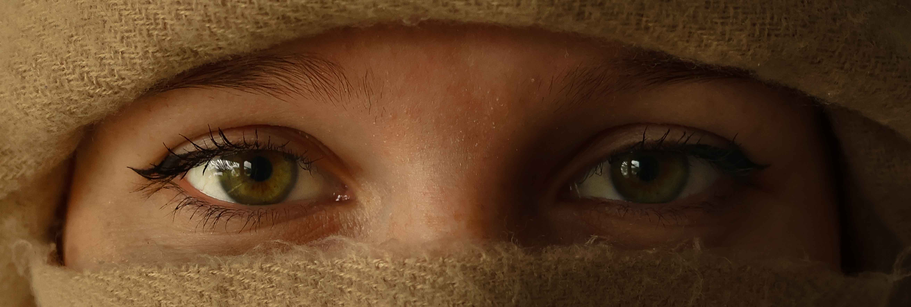
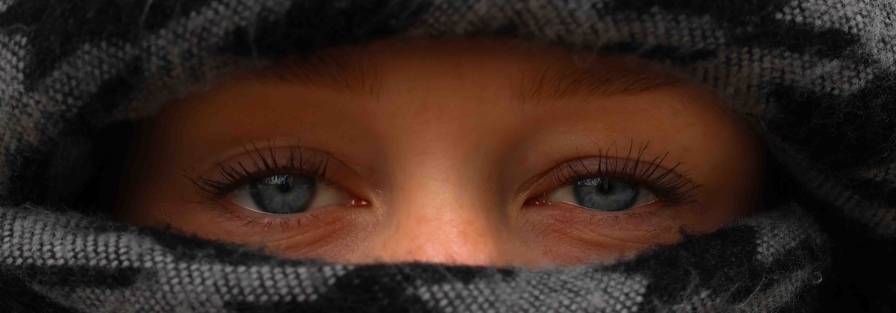
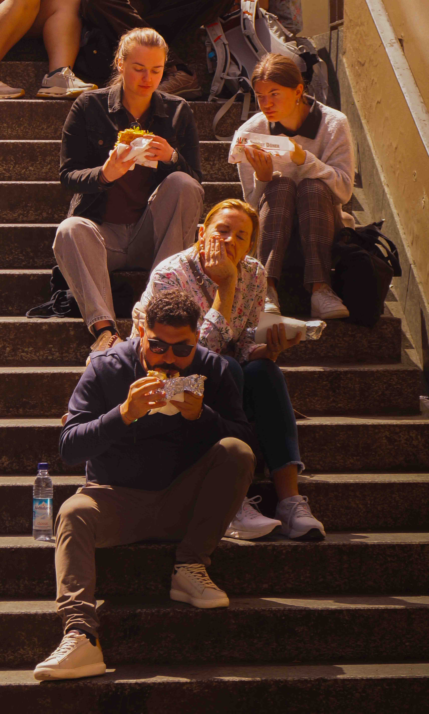
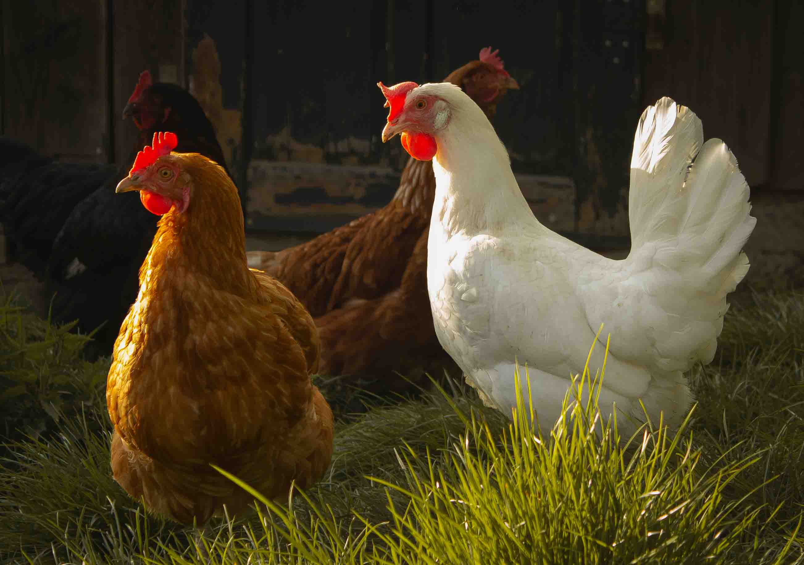
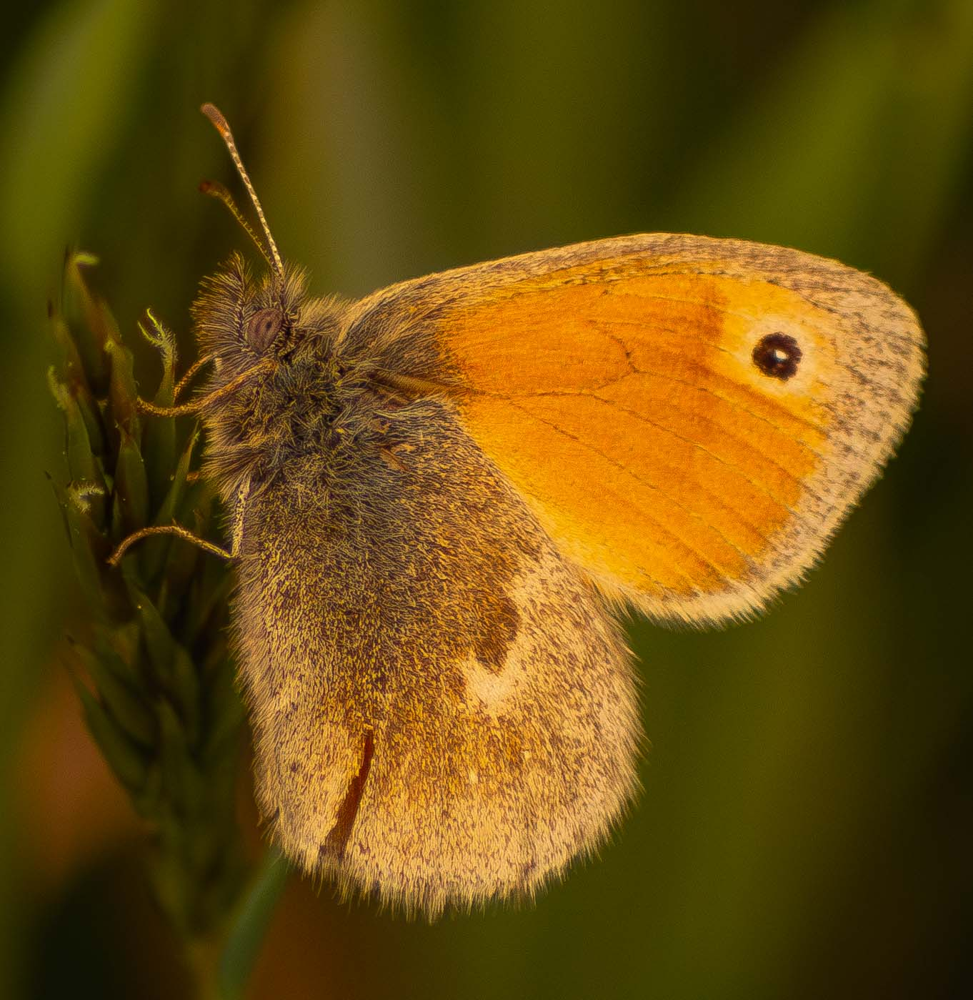

Sina Stumpe - Präsentation von meinen Best-of Bildern

Grüne Augen im Fokus
Portraitfotografie - Grüne Augen im Fokus.

Blaue Augen im Fokus
Portraitfotografie - Blaue Augen im Fokus.

Münchener beim Döner essen
Urban-Street Photography - Münchener beim Döner essen.

Hühner im Portrait
Tierfotografie - Hühner.

Schmetterling in Makro
Tierfotografie - Schmetterling in Makro.